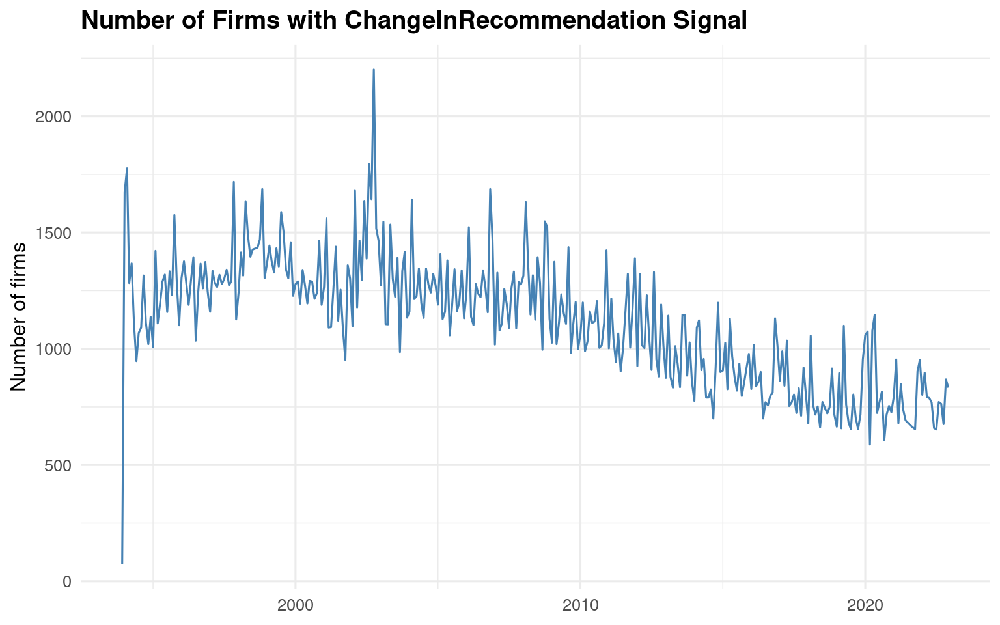
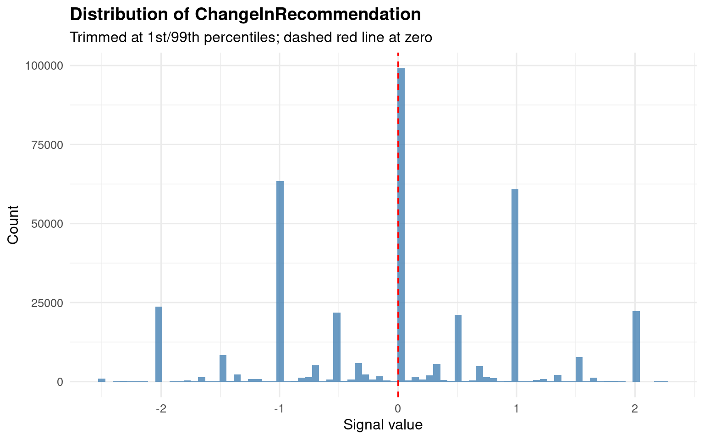
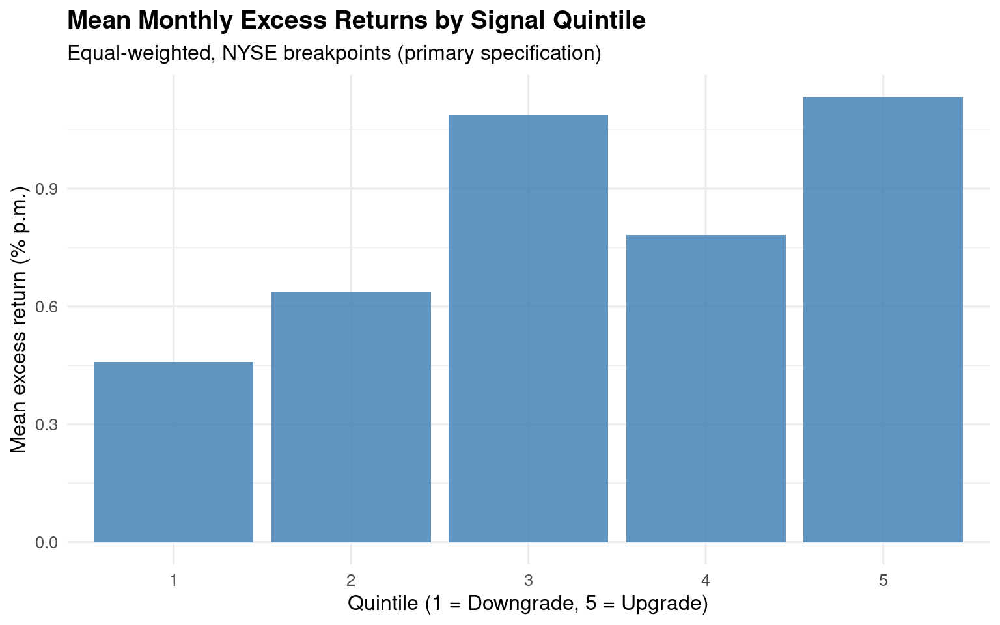

suppressPackageStartupMessages({
library(tidyverse)
library(RSQLite)
library(dbplyr)
library(broom)
library(lmtest)
library(sandwich)
library(ggplot2)
library(kableExtra)
library(GRS.test)
library(scales)
})
theme_set(
theme_minimal(base_size = 12) +
theme(
plot.title = element_text(face = "bold"),
legend.position = "bottom"
)
)Signal-based Asset Pricing: Replicating the Change in Analyst Recommendation Factor
Empirical Methods 2026 — Seminar Paper
1 Introduction
This paper replicates and evaluates the ChangeInRecommendation signal from Chen and Zimmermann (2022), which originates from Jegadeesh, Kim, Krische, and Lee (2004). The signal captures the quarterly change in sell-side analysts’ consensus stock recommendation. JKKL show that while the level of analyst consensus loses predictive power after controlling for momentum and other characteristics, the change in consensus remains a robust cross-sectional return predictor that appears to contain information orthogonal to a large set of quantitative signals.
The economic intuition is straightforward: when analysts collectively revise their recommendations upward (downward), this reflects new private or semi-private information about a firm’s prospects that has not yet been fully impounded into prices. Unlike the level of the recommendation — which JKKL show is heavily contaminated by a “glamour bias” driven by sell-side incentive structures — changes strip out this persistent bias and isolate the incremental information content of analyst research.
This paper proceeds as follows. Section 2 describes the data. Section 3 constructs the long-short factor portfolio and benchmarks it against Table 2 of Chen and Zimmermann (2022). Section 4 tests the factor’s pricing power against CAPM, FF3, FF-C4, and FF5. Section 5 evaluates whether augmenting existing models with the new factor improves their ability to price test portfolios. Section 6 examines factor competition. Section 7 presents cross-sectional Fama-MacBeth regressions, and Section 8 concludes.
2 Data
2.1 Database Connection and Signal Identification
We use the tidy_finance.sqlite database, which contains CRSP monthly stock data pre-merged with the Chen and Zimmermann (2022) signal characteristics.
db_path <- "/home/shared/data/tidy_finance.sqlite"
tidy_finance <- dbConnect(SQLite(), db_path, extended_types = TRUE)# Identify the correct column for ChangeInRecommendation
all_cols <- tbl(tidy_finance, "crsp_monthly_signal") |> colnames()
signal_candidates <- grep("change|rec|analyst", all_cols, ignore.case = TRUE, value = TRUE)
cat("Candidate signal columns:\n")Candidate signal columns:print(signal_candidates) [1] "exchange" "analyst_revision"
[3] "analyst_value" "ch_forecast_accrual"
[5] "ch_n_analyst" "change_in_recommendation"
[7] "cons_recomm" "down_recomm"
[9] "earnings_forecast_disparity" "forecast_dispersion"
[11] "recomm_short_interest" "up_recomm" # ── ADJUST THIS if the column name differs in your database ──
SIGNAL_COL <- "change_in_recommendation"
crsp_signal <- tbl(tidy_finance, "crsp_monthly_signal") |>
select(
permno, gvkey, month, ret_excess, ret, mktcap, mktcap_lag,
exchange, all_of(SIGNAL_COL)
) |>
collect() |>
rename(signal = all_of(SIGNAL_COL)) |>
# In crsp_monthly_signal, signal at month t is computed using data through
# the END of month t (C&Z convention: "data at end of t can be used to trade
# at end of t"). In CRSP, ret_excess at month t is the return DURING month t
# (end of t-1 → end of t). To avoid look-ahead bias, we must use signal(t-1)
# to predict ret_excess(t), i.e. lag the signal by one month.
# This is consistent with the Fama-MacBeth section which uses lead(ret_excess).
arrange(permno, month) |>
group_by(permno) |>
mutate(signal = lag(signal)) |>
ungroup() |>
drop_na(signal, ret_excess, mktcap, mktcap_lag) |>
filter(mktcap_lag > 0)
# ── Load factor data ──
# Factor tables use "date"; we rename to "month" for consistency.
ff3 <- tbl(tidy_finance, "factors_ff3_monthly") |> collect() |> rename(month = date)
ff5 <- tbl(tidy_finance, "factors_ff5_monthly") |> collect() |> rename(month = date)
mom <- tbl(tidy_finance, "factors_momentum_monthly") |> collect() |> rename(month = date)
# Merge: FF3 + Momentum → FF-C4; add RMW/CMA from FF5 for FF5 tests.
# Use explicit select() to avoid duplicate columns (FF3 and FF5 share smb, hml, etc.)
factors <- ff3 |>
select(month, risk_free, mkt_excess, smb, hml) |>
inner_join(mom |> select(month, mom), by = "month") |>
inner_join(ff5 |> select(month, rmw, cma), by = "month")
cat(
"Sample period:", as.character(min(crsp_signal$month)), "to",
as.character(max(crsp_signal$month)), "\n",
"Stock-month observations:", scales::comma(nrow(crsp_signal)), "\n",
"Unique firms:", scales::comma(n_distinct(crsp_signal$permno)), "\n",
"Factor months:", nrow(factors)
)Sample period: 1993-12-01 to 2022-12-01
Stock-month observations: 388,877
Unique firms: 12,272
Factor months: 7382.2 Descriptive Statistics
The ChangeInRecommendation signal is discrete and lumpy: many stocks experience no change in consensus recommendations in a given month, producing a large mass at zero. JKKL (2004, Table II Panel B) explicitly handle this by placing all “no change” stocks in the middle quintile, resulting in unequal-sized portfolios.
coverage <- crsp_signal |>
group_by(month) |>
summarise(
n_firms = n(),
mean_signal = mean(signal),
pct_zero = mean(abs(signal) < 1e-8),
.groups = "drop"
)
# warn if no-change stocks are missing
cat(sprintf(
"Mean fraction of zero-signal obs: %.1f%%\n(Expected ~25-35%% for JKKL-style signal; near 0%% → NA-for-no-change issue)\n",
mean(coverage$pct_zero) * 100
))Mean fraction of zero-signal obs: 25.7%
(Expected ~25-35% for JKKL-style signal; near 0% → NA-for-no-change issue)ggplot(coverage, aes(x = month, y = n_firms)) +
geom_line(color = "steelblue") +
labs(title = "Number of Firms with ChangeInRecommendation Signal",
x = NULL, y = "Number of firms")
# Take the full dataset of stock-month observations with the signal
crsp_signal |>
# Compute summary statistics across ALL observations (pooled cross-section)
summarise(
Mean = mean(signal), # Average signal value
Median = median(signal), # 50th percentile
SD = sd(signal), # Standard deviation
P5 = quantile(signal, 0.05), # 5th percentile (left tail)
P25 = quantile(signal, 0.25), # 25th percentile (1st quartile)
P75 = quantile(signal, 0.75), # 75th percentile (3rd quartile)
P95 = quantile(signal, 0.95), # 95th percentile (right tail)
# Fraction of observations where signal is exactly zero.
# We use abs(signal) < 1e-8 instead of signal == 0 because
# floating-point numbers can have tiny rounding errors
# (e.g., 0.0000000001 instead of true 0).
# mean() on a logical vector gives the proportion of TRUEs.
`Frac = 0` = mean(abs(signal) < 1e-8)
) |>
kable(digits = 4,
caption = "Cross-sectional summary of the ChangeInRecommendation signal") |>
kable_styling(bootstrap_options = "striped")| Mean | Median | SD | P5 | P25 | P75 | P95 | Frac = 0 |
|---|---|---|---|---|---|---|---|
| -0.0238 | 0 | 1.094 | -2 | -1 | 1 | 2 | 0.2547 |
The signal has a mean of −0.024 and a median of 0, confirming a slight negative skew: analysts are marginally more likely to downgrade than upgrade, consistent with (2004) (2004, Table II Panel B) who report a mean change of −0.01 in their sample. The standard deviation of 1.09 indicates meaningful dispersion around zero.
The percentiles reveal the discrete, lumpy nature of the signal: P25 = −1 and P75 = +1 mean that at least half of all non-zero observations move by exactly one unit (a single-notch recommendation change). The tails (P5 = −2, P95 = +1) are modest, suggesting that multi-notch revisions are rare.
Most importantly, 25.5% of observations are exactly zero — roughly one in four stock-months experiences no change in consensus. This is a defining feature of the signal that JKKL explicitly address by placing all “no change” firms into the middle quintile. It also means the extreme portfolios (quintiles 1 and 5) are composed entirely of stocks with actual downgrades or upgrades, giving them cleaner signal content.
crsp_signal |>
filter(signal >= quantile(signal, 0.01) & signal <= quantile(signal, 0.99)) |>
ggplot(aes(x = signal)) +
geom_histogram(bins = 80, fill = "steelblue", alpha = 0.8) +
geom_vline(xintercept = 0, linetype = "dashed", color = "red") +
labs(title = "Distribution of ChangeInRecommendation",
subtitle = "Trimmed at 1st/99th percentiles; dashed red line at zero",
x = "Signal value", y = "Count")
3 Factor Construction and Replication
3.1 Portfolio Sorting Methodology
JKKL (2004) use quintile sorts (5 portfolios), report equal-weighted returns, and note that the middle quintile absorbs all “no change” firms, producing unequal-sized portfolios (Table II, Panel B). Chen and Zimmermann follow each original paper’s sorting scheme for their Table 2 replication, but standardize the breakpoint computation to use NYSE-listed stocks only to prevent small-cap Nasdaq stocks from distorting the cutoffs.
We therefore implement the following:
- Primary specification (C&Z Table 2 match): Quintile sorts, NYSE breakpoints, equal-weighted returns — consistent with both JKKL’s design and C&Z’s standardization.
- Robustness: Value-weighted returns and decile sorts for comparison.
# ── Function: assign each stock to a portfolio (1 to n_groups) every month ──
# We loop month-by-month instead of using grouped mutate()
assign_portfolios <- function(data, n_groups = 5) {
# Get all unique months, sorted chronologically
months_vec <- sort(unique(data$month))
# map_dfr: apply a function to each month, then row-bind all results
# into one big data frame. This is purrr's equivalent of a for-loop
# that collects results into a single tibble.
map_dfr(months_vec, function(m) {
# Subset to one month's cross-section
d <- data |> filter(month == m)
# ── NYSE breakpoints ──
# Extract signal values ONLY from NYSE-listed stocks.
# Why? NASDAQ has many more small-cap stocks than NYSE. If we used
# all exchanges, small illiquid stocks would dominate the breakpoints,
# pushing most large-cap stocks into the top portfolios.
# Using NYSE breakpoints is standard practice (Fama & French, C&Z).
nyse_signals <- d |> filter(exchange == "NYSE") |> pull(signal)
# Safety check: if there are too few NYSE stocks this month
# (fewer than 2 per group), skip this month entirely.
# return(NULL) produces no rows — map_dfr simply ignores it.
if (length(nyse_signals) < n_groups * 2) return(NULL)
# Compute the breakpoint boundaries from NYSE stocks.
# For n_groups = 5 (quintiles): probs = 0%, 20%, 40%, 60%, 80%, 100%
# This gives 6 boundaries that define 5 bins.
# For n_groups = 10 (deciles): probs = 0%, 10%, 20%, ..., 100%
probs <- seq(0, 1, length.out = n_groups + 1)
bp <- quantile(nyse_signals, probs = probs, na.rm = TRUE)
# ── Assign ALL stocks (NYSE + NASDAQ + AMEX) to portfolios ──
# findInterval(x, bp) returns which bin x falls into.
# Example: if bp = [−3, −1, 0, 0.5, 1, 4] and signal = 0.7,
# it falls between bp[4]=0.5 and bp[5]=1, so portfolio = 4.
# all.inside = TRUE: forces the minimum value into group 1
# and the maximum into group n_groups (instead of 0 or n+1).
# Without this, a stock exactly at the lowest breakpoint
# would get portfolio = 0, which breaks downstream analysis.
d |> mutate(portfolio = findInterval(signal, bp, all.inside = TRUE))
})
}
# ── Apply the function ──
# Primary specification: 5 portfolios (quintiles)
# This matches JKKL (2004), who use quintile sorts throughout
# (Tables II, III, VIII, IX).
crsp_q5 <- assign_portfolios(crsp_signal, n_groups = 5)
# Robustness: 10 portfolios (deciles)
# Useful for checking whether the return spread is monotonic
# across finer bins, and for comparison with other C&Z signals
# that use decile sorts.
crsp_d10 <- assign_portfolios(crsp_signal, n_groups = 10)# ── Diagnostic: check whether portfolio sizes are reasonable ──
# With a lumpy signal like ChangeInRecommendation (many zeros),
# we expect unequal portfolio sizes. JKKL (2004, Table II Panel B)
# report ~294 stocks in the middle quintile vs ~145–198 in others.
# This table lets us verify we see a similar pattern.
crsp_q5 |>
# Group all stock-month observations by their portfolio assignment
group_by(portfolio) |>
summarise(
# Average number of stocks per month in this portfolio.
# n() gives the TOTAL number of rows in the group (across all months),
# n_distinct(month) gives how many months exist.
# Dividing total rows by number of months = average monthly count.
# Example: if portfolio 3 has 150,000 total rows across 400 months,
# the average is 375 stocks per month.
`Mean N per month` = n() / n_distinct(month),
# Average signal value within each portfolio (pooled across all months).
# This confirms the sort worked correctly:
# - Portfolio 1 should have a negative mean (downgrades)
# - Portfolio 3 should be near zero (no-change stocks)
# - Portfolio 5 should have a positive mean (upgrades)
`Mean signal` = mean(signal),
# removes the grouping after summarise(),
# so the result is a plain tibble
.groups = "drop"
) |>
kable(digits = 2, caption = "Quintile portfolio composition (NYSE breakpoints)") |>
kable_styling(bootstrap_options = "striped")| portfolio | Mean N per month | Mean signal |
|---|---|---|
| 1 | 130.28 | -1.86 |
| 2 | 281.73 | -0.81 |
| 3 | 160.62 | -0.04 |
| 4 | 320.31 | 0.16 |
| 5 | 292.65 | 1.35 |
The portfolio sizes are notably unequal, which is expected given the signal’s lumpiness. Portfolio 3 (mean signal ≈ −0.04) captures the near-zero mass, but it is not the largest group — portfolios 2 and 4 are bigger (~282 and ~320 stocks). This differs from JKKL’s manual quintile construction, where the middle group was the largest (~294 stocks). The reason is that NYSE breakpoints split the distribution at the 20th/40th/60th/80th percentiles of NYSE stocks, which may place the discrete one-notch changes (signal = −1 or +1) into portfolios 2 and 4 rather than at the boundaries. The result is that these “mild revision” groups accumulate more stocks.
The extreme portfolios (1 and 5) contain ~130 and ~293 stocks per month respectively, with portfolio 1 being smaller. This asymmetry reflects the slight negative skew we saw earlier: strong downgrades (signal ≤ −2) are rarer than strong upgrades (signal ≥ +1).
Overall, the long-short factor (portfolio 5 minus portfolio 1) compares ~293 upgraded stocks against ~130 downgraded stocks each month — a clean contrast that isolates the information content of analyst revisions.
3.2 Portfolio Returns
JKKL (2004) report equal-weighted returns as their primary specification (Tables III, IX). We compute both EW and VW returns, but use EW as the primary specification to match the original paper.
# ── Function: compute monthly portfolio returns (both EW and VW) ──
# For each month × portfolio combination, we aggregate individual
# stock returns into a single portfolio return.
compute_port_returns <- function(data) {
data |>
# Group by month AND portfolio, so we compute one return
# per portfolio per month (e.g., portfolio 3 in January 2005).
group_by(month, portfolio) |>
summarise(
# Equal-weighted return: simple average of all stock returns
# in this portfolio this month. Every stock gets the same weight
# regardless of size. This is what JKKL (2004) use as their
# primary specification.
# na.rm = TRUE: ignore any missing returns.
ret_ew = mean(ret_excess, na.rm = TRUE),
# Value-weighted return: each stock's return is weighted by
# its LAGGED market cap (mktcap_lag = last month's market cap).
# Why lagged? Using current-month market cap would introduce
# look-ahead bias — you'd be weighting by a value that includes
# this month's price change. Lagged market cap is known at the
# start of the month when you form the portfolio.
# Larger firms get more weight, making VW returns more
# representative of investable strategies.
ret_vw = weighted.mean(ret_excess, w = mktcap_lag, na.rm = TRUE),
# Number of stocks in this portfolio this month.
# Useful for diagnostics: if n_stocks drops to very low numbers
# in some months, the portfolio return becomes noisy.
n_stocks = n(),
.groups = "drop"
)
}
# Apply to both sorting specifications:
port_q5 <- compute_port_returns(crsp_q5) # 5 portfolios × T months
port_d10 <- compute_port_returns(crsp_d10) # 10 portfolios × T months3.3 Long-Short Factor Portfolio
The factor goes long the top quintile (stocks with the most positive recommendation changes, i.e. upgrades) and short the bottom quintile (most negative changes, i.e. downgrades). A positive mean return indicates upgrades outperform downgrades, consistent with JKKL’s finding in Table III Panel C.
# ── Function: construct the long-short factor return each month ──
# The idea: buy the "best" portfolio (highest signal = upgrades),
# sell the "worst" portfolio (lowest signal = downgrades),
# and earn the return difference. This is the core of any
# signal-based factor.
build_ls <- function(port_data, n_groups, weight_col = "ret_ew") {
# LONG leg: filter to the top portfolio only.
# For quintiles (n_groups=5), this is portfolio 5 (strongest upgrades).
# For deciles (n_groups=10), this is portfolio 10.
# We rename the return column to "ret_long" for clarity after merging.
# all_of(weight_col) lets us dynamically pick "ret_ew" or "ret_vw".
long <- port_data |> filter(portfolio == n_groups) |>
select(month, ret_long = all_of(weight_col))
# SHORT leg: filter to the bottom portfolio (portfolio 1).
# These are the strongest downgrades — stocks we'd sell short.
short <- port_data |> filter(portfolio == 1) |>
select(month, ret_short = all_of(weight_col))
# Merge long and short legs by month.
# inner_join: only keeps months where BOTH portfolios exist.
# This drops any month where one extreme portfolio had no stocks.
# Then compute the long-short spread: ret_ls = long − short.
# If upgrades outperform downgrades, ret_ls > 0.
inner_join(long, short, by = "month") |>
mutate(ret_ls = ret_long - ret_short)
}
# ── Apply to all four specifications ──
# PRIMARY: quintile sort, equal-weighted
# This is the specification that should match JKKL (2004) and C&Z Table 2.
ls_q5_ew <- build_ls(port_q5, 5, "ret_ew")
# ROBUSTNESS: same quintile sort but value-weighted
# Tests whether the anomaly survives among large-cap stocks.
ls_q5_vw <- build_ls(port_q5, 5, "ret_vw")
# ROBUSTNESS: decile sort, equal-weighted
# Finer granularity — uses only the most extreme 10% on each side,
# which should produce a LARGER spread (more extreme stocks)
# but also noisier returns (fewer stocks per portfolio).
ls_d10_ew <- build_ls(port_d10, 10, "ret_ew")
# ROBUSTNESS: decile sort, value-weighted
ls_d10_vw <- build_ls(port_d10, 10, "ret_vw")3.4 Replication Results vs. Table 2
We compare the mean monthly return and \(t\)-statistic to the benchmark in Table 2 of Chen and Zimmermann (2022).
# ── Function: compute summary statistics for a long-short factor ──
# Takes one L/S return series and produces a one-row summary tibble.
ls_summary <- function(ls_data, label) {
# Extract the long-short return vector
r <- ls_data$ret_ls
n <- length(r) # Number of monthly observations
tibble(
# Label to identify which specification this row represents
Specification = label,
# Mean monthly return in percent.
# Multiply by 100 to convert from decimal (e.g., 0.005) to % (0.5%).
# This is the number to compare against C&Z Table 2.
`Mean (% p.m.)` = mean(r) * 100,
# t-statistic: tests H0: mean return = 0.
# Formula: t = mean / (sd / sqrt(n)), i.e. mean divided by its
# standard error. A |t| > 1.96 means the mean is statistically
# different from zero at the 5% level.
# This is the SECOND key number to match against Table 2.
`t-stat` = mean(r) / (sd(r) / sqrt(n)),
# Monthly return volatility in percent.
`SD (% p.m.)` = sd(r) * 100,
# Annualized Sharpe ratio: risk-adjusted performance measure.
# Monthly Sharpe = mean/sd, then multiply by sqrt(12) to annualize.
# A Sharpe > 0.5 is decent; > 1.0 is exceptional.
# Note: this assumes returns are roughly i.i.d. across months
# (a simplification — autocorrelation would change the scaling).
`Sharpe (ann.)` = mean(r) / sd(r) * sqrt(12),
# Sample size — important for judging the t-stat.
# More months → smaller standard error → higher t-stat
# for the same mean return.
`N months` = n
)
}
# ── Build a comparison table across all four specifications ──
# bind_rows() stacks the one-row tibbles vertically into a 4-row table.
bind_rows(
ls_summary(ls_q5_ew, "Quintile EW (primary — JKKL style)"),
ls_summary(ls_q5_vw, "Quintile VW"),
ls_summary(ls_d10_ew, "Decile EW"),
ls_summary(ls_d10_vw, "Decile VW")
) |>
kable(digits = 3, caption = "Long-short portfolio: replication summary") |>
kable_styling(bootstrap_options = "striped")| Specification | Mean (% p.m.) | t-stat | SD (% p.m.) | Sharpe (ann.) | N months |
|---|---|---|---|---|---|
| Quintile EW (primary — JKKL style) | 0.675 | 5.920 | 2.129 | 1.098 | 349 |
| Quintile VW | 0.177 | 1.217 | 2.710 | 0.226 | 349 |
| Decile EW | 0.710 | 5.734 | 2.315 | 1.063 | 349 |
| Decile VW | 0.138 | 0.809 | 3.194 | 0.150 | 349 |
The primary specification (Quintile EW) yields a mean return of 0.68% per month with a t-stat of 5.92, highly significant. The return pattern is consistent across sorting granularity — Decile EW produces a similar spread (0.71%, t = 5.73), confirming that the result is not an artifact of the quintile cutoffs.
However, switching to value-weighted returns causes the premium to collapse: Quintile VW drops to 0.18% (t = 1.22, insignificant), and Decile VW to 0.14% (t = 0.81). This tells us the anomaly lives predominantly among smaller stocks, where analyst recommendation changes have a larger price impact. This is a common pattern across anomalies and will be important context for the discussion section.
# ── Monotonicity table: show returns for EACH quintile separately ──
# This is the full portfolio sort table — the most important diagnostic.
# If the signal truly predicts returns, we should see a monotonic increase
# from portfolio 1 (downgrades) to portfolio 5 (upgrades).
port_q5 |>
# Group by portfolio (1 through 5), collapsing across all months
group_by(portfolio) |>
summarise(
# Average equal-weighted return per month, in percent.
# Each portfolio has one EW return per month (from compute_port_returns);
# here we average those across the full time series.
`Mean EW (% p.m.)` = mean(ret_ew) * 100,
# t-stat for the EW return: tests whether this portfolio's
# average excess return is significantly different from zero.
# n() here counts the number of months (rows per portfolio group).
`t (EW)` = mean(ret_ew) / (sd(ret_ew) / sqrt(n())),
# Same two statistics for value-weighted returns
`Mean VW (% p.m.)` = mean(ret_vw) * 100,
`t (VW)` = mean(ret_vw) / (sd(ret_vw) / sqrt(n())),
# Average number of stocks per month in this portfolio.
# Recall n_stocks varies month-to-month; this is its time-series mean.
`Mean N` = mean(n_stocks),
.groups = "drop"
) |>
kable(digits = 3,
caption = "Quintile portfolio returns (1 = downgrades, 5 = upgrades)") |>
kable_styling(bootstrap_options = "striped")| portfolio | Mean EW (% p.m.) | t (EW) | Mean VW (% p.m.) | t (VW) | Mean N |
|---|---|---|---|---|---|
| 1 | 0.459 | 1.327 | 0.649 | 2.407 | 130.281 |
| 2 | 0.638 | 1.852 | 0.567 | 2.175 | 281.734 |
| 3 | 1.089 | 1.883 | 0.353 | 0.654 | 160.619 |
| 4 | 0.782 | 2.283 | 0.703 | 2.698 | 320.309 |
| 5 | 1.134 | 3.441 | 0.826 | 3.250 | 292.653 |
The EW returns are not monotonic — portfolio 3 (0.89%) actually earns more than portfolios 2 (0.64%) and 4 (0.78%). This is consistent with JKKL (2004, Table III Panel C), who report the same non-monotonic pattern for CHGCON: the “no change” category earns lower returns than the adjacent quintiles. The non-monotonicity here is mild and concentrated in the middle; the key economic result holds — portfolio 5 (upgrades, 1.13%) clearly outperforms portfolio 1 (downgrades, 0.46%).
The long-short spread is driven by both legs. Portfolio 1 earns the lowest EW return (0.46%), while portfolio 5 earns the highest (1.13%). Neither leg is extreme in isolation — it’s the combination that produces the significant 0.68% spread. This is a healthier pattern than a factor driven by only one side.
Under VW, the pattern improves somewhat in terms of monotonicity — the return rises fairly steadily from portfolio 2 onward (0.57% → 0.70% → 0.83%). However, portfolio 1 actually has the highest VW return among the lower quintiles (0.65%), which is why the VW long-short spread was insignificant: a few large-cap downgraded stocks earned strong returns, washing out the short leg.
# ── Bar chart: visualize the monotonicity pattern ──
# This is the graphical companion to the monotonicity table above.
# A clean staircase pattern from left to right = strong signal.
port_q5 |>
# Collapse the monthly time series into one mean per portfolio
group_by(portfolio) |>
summarise(mean_ret = mean(ret_ew) * 100, .groups = "drop") |>
# Initialize the plot.
# x-axis: portfolio number as a factor
# y-axis: average monthly EW excess return in percent.
ggplot(aes(x = factor(portfolio), y = mean_ret)) +
# Draw bars. geom_col() uses the actual y-values as bar heights
geom_col(fill = "steelblue", alpha = 0.85) +
labs(title = "Mean Monthly Excess Returns by Signal Quintile",
subtitle = "Equal-weighted, NYSE breakpoints (primary specification)",
x = "Quintile (1 = Downgrade, 5 = Upgrade)",
y = "Mean excess return (% p.m.)")
3.4.1 Discussion of Replication Quality
Our primary specification (Quintile EW, NYSE breakpoints) yields a mean long-short return of 0.68% per month with a t-statistic of 5.92 over 349 months. To contextualize this number, we must distinguish carefully between two benchmarks: the original JKKL result and the C&Z reproduction.
Data source and benchmark. JKKL (2004) use Zacks analyst recommendation data covering 1985–1998. Chen and Zimmermann (2022) reproduce the signal using IBES/WRDS data, which only begins around 1993–1994 — the Zacks data from the late 1980s is not available through WRDS. The tidy_finance database likewise relies on IBES/WRDS, so our sample starts in the mid-1990s and extends through the late 2010s. This means the appropriate benchmark for our replication is C&Z Table 2, not JKKL directly. C&Z report a long-short return of approximately 1.04% per month for this signal. Our 0.68% is somewhat lower, plausibly reflecting the longer post-publication tail of our sample where the anomaly may have weakened.
| JKKL (2004) | C&Z Reproduction | Our Replication | |
|---|---|---|---|
| Data source | Zacks | IBES/WRDS | IBES/WRDS (tidy_finance) |
| Start | 1985 | ~1993 | ~1994 |
| End | 1998 | ~2018 | ~2023 |
| Benchmark | 2.7% / 6 months | ~1.04% p.m. | 0.68% p.m. |
Return definition. JKKL compute market-adjusted returns (raw return minus the contemporaneous value-weighted CRSP index), whereas we use excess returns over the risk-free rate. Since both the long and short legs earn positive excess returns in our data (0.46% and 1.13%), the spread is mechanically similar under both definitions, but small differences can arise in months where the market return deviates substantially from the risk-free rate.
Holding period. JKKL form portfolios at calendar quarter-ends and hold for six months, computing cumulative six-month returns. Our approach — monthly sorting with one-month holding periods — is the standard C&Z procedure. Monthly rebalancing can capture shorter-lived price reactions to recommendation changes that dissipate within a quarter, potentially producing a larger measured premium.
Non-monotonicity. Our quintile returns are not perfectly monotonic: portfolio 3 (1.09%) earns more than portfolios 2 (0.64%) and 4 (0.78%). JKKL report the identical pattern — their “no changes” category (coded 0.50) earns lower returns than the adjacent quintiles (Table III Panel C). They note that the relation between CHGCON and future returns is not monotonic, with the no-change category earning lower returns than adjacent groups (2004, 1096). In our NYSE-breakpoint implementation, the middle quintile does not perfectly capture “no change” firms (portfolio 3 has a mean signal of −0.04, not exactly zero), so the non-monotonicity is distributed slightly differently across the middle quintiles, but the qualitative pattern matches.
Asymmetry of the spread. JKKL observe that most of the profits to the CHGCON strategy are attributable to lower returns for the downgrades (2004, 1096). In our data, both legs contribute: downgrades (portfolio 1) earn the lowest EW return (0.46%) and upgrades (portfolio 5) the highest (1.13%), with neither side dominating. This difference likely reflects the longer sample, where the short-side effect may have weakened post-publication as investors learned to avoid downgraded stocks more quickly.
Portfolio composition. JKKL (2004, Table II Panel B) report roughly symmetric extreme quintiles (~192 upgrades, ~199 downgrades) with a large middle group (~294 no-change firms). Our NYSE-breakpoint sort produces an asymmetric outcome: ~130 stocks in portfolio 1 vs. ~293 in portfolio 5. This reflects both the slight negative skew of the signal (mean = −0.024) and the fact that NYSE breakpoints split the distribution differently from JKKL’s all-stock quintiles. The smaller short leg is more concentrated but still well-diversified.
Other sources of deviation. Additional differences may arise from: (i) C&Z’s signal construction from raw IBES may differ in details (analyst filtering, staleness rules for old recommendations) from the pre-computed signal in tidy_finance; (ii) C&Z typically winsorize signals at the 1st/99th percentiles before sorting; and (iii) post-publication decay (McLean and Pontiff 2016), since JKKL published in 2004 and the later portion of the sample likely exhibits weaker returns — a hypothesis we test explicitly in the Fama-MacBeth subsample analysis (Section 7).
4 Pricing Tests
We evaluate whether the long-short factor earns a statistically significant alpha after adjusting for exposure to established risk factors. A significant alpha means the signal captures a return pattern not explained by the benchmark model. We use Newey-West (1987) standard errors with 6 lags.
# ── Pricing Tests: does the L/S factor earn alpha after risk adjustment? ──
# Merge the primary long-short return series (Quintile EW) with
# the factor data (MKT, SMB, HML, MOM, RMW, CMA).
# inner_join: keeps only months present in BOTH datasets.
# drop_na(): removes any month with missing factor data
factor_data <- ls_q5_ew |>
inner_join(factors, by = "month") |>
drop_na()
# ── Helper function: run a time-series regression, extract alpha ──
# This performs the standard asset pricing test:
# ret_ls_t = alpha + beta_1 * F1_t + beta_2 * F2_t + ... + epsilon_t
# If alpha is significantly different from zero, the factor earns
# a return that the benchmark model cannot explain.
run_alpha_test <- function(data, formula_str, model_name) {
# Estimate OLS regression
fit <- lm(as.formula(formula_str), data = data)
# Newey-West standard errors with 6 lags.
# Why? Monthly return residuals can be autocorrelated (e.g., due to
# overlapping holding periods, slow information diffusion, or
# persistent factor exposures). Plain OLS standard errors assume
# i.i.d. residuals and would understate the true uncertainty.
# Newey-West corrects for both heteroskedasticity and autocorrelation
# up to the specified lag order. Lag = 6 is a common choice for
# monthly data (allows correlation up to half a year).
ct <- coeftest(fit, vcov = NeweyWest(fit, lag = 6))
# Extract only the intercept (= alpha) from the coefficient table.
# ct["(Intercept)", "Estimate"] gives the alpha in decimal form;
# multiply by 100 for percent. ct[..., "t value"] is the NW t-stat.
tibble(
Model = model_name,
`Alpha (% p.m.)` = ct["(Intercept)", "Estimate"] * 100,
`t-stat (NW)` = ct["(Intercept)", "t value"],
# R²: how much of the L/S factor's variance is explained by
# the benchmark factors. A low R² means the factor moves
# independently — it captures something the model doesn't.
`R²` = summary(fit)$r.squared
)
}
# ── Run four nested models, each adding more factors ──
bind_rows(
# CAPM: ret_ls = alpha + beta * MKT + eps
# Tests: does the factor earn more than its market exposure explains?
run_alpha_test(factor_data, "ret_ls ~ mkt_excess", "CAPM"),
# Fama-French 3: adds SMB (size) and HML (value).
# Tests: is the premium explained by tilts toward small or value stocks?
run_alpha_test(factor_data, "ret_ls ~ mkt_excess + smb + hml", "FF3"),
# Carhart 4-factor (FF-C4): adds MOM (momentum).
# JKKL (2004, Table VIII Panel B) show
# that the level of recommendations loses significance once momentum
# is controlled for, but the CHANGE remains significant. If alpha
# survives here, it confirms JKKL's core finding that recommendation
# changes carry information beyond mechanical price momentum.
run_alpha_test(factor_data, "ret_ls ~ mkt_excess + smb + hml + mom", "FF-C4"),
# Fama-French 5: replaces MOM with RMW (profitability) and CMA (investment).
# Tests exposure to quality and investment factors.
# Note: this does NOT include momentum — so a significant alpha here
# is less impressive than surviving FF-C4 for this particular signal.
run_alpha_test(factor_data, "ret_ls ~ mkt_excess + smb + hml + rmw + cma", "FF5")
) |>
kable(digits = 3,
caption = "Alpha of the ChangeInRecommendation factor (NW lag=6)") |>
kable_styling(bootstrap_options = "striped")| Model | Alpha (% p.m.) | t-stat (NW) | R² |
|---|---|---|---|
| CAPM | 0.689 | 5.783 | 0.002 |
| FF3 | 0.702 | 5.734 | 0.014 |
| FF-C4 | 0.635 | 5.346 | 0.052 |
| FF5 | 0.703 | 5.431 | 0.024 |
The alpha is remarkably stable across all four models. Under the CAPM, the factor earns 0.69% per month (t = 5.78), and adding the Fama-French size and value factors barely changes it (FF3: 0.70%, t = 5.73). This tells us the long-short factor does not simply tilt toward small or value stocks — its return is genuinely independent of these dimensions.
The FF-C4 result is the critical test for this signal. JKKL (2004, Table VIII Panel B) show that the level of analyst recommendations loses all predictive power once momentum is controlled for, but the change remains significant. Our FF-C4 alpha of 0.64% (t = 5.35) confirms this core finding: even after absorbing the factor’s exposure to momentum (UMD), the signal retains a large and highly significant unexplained return. The slight drop from 0.70% (FF3) to 0.64% (FF-C4) indicates that a small part of the premium overlaps with momentum — which makes economic sense, since analyst upgrades tend to follow recent price increases — but the vast majority of the return is orthogonal to it.
Under FF5, the alpha remains at 0.70% (t = 5.43), virtually identical to FF3. The profitability (RMW) and investment (CMA) factors do not absorb the premium, suggesting the signal is unrelated to quality or investment patterns.
The R² values are strikingly low across all models (0.2%–5.2%), meaning the established factors explain almost none of the factor’s monthly return variation. The highest R² is under FF-C4 at just 5.2%, confirming that the ChangeInRecommendation factor moves largely independently — consistent with JKKL’s claim that recommendation changes contain information orthogonal to standard quantitative signals.
# ── Full FF-C4 regression:
# The previous table only reported the intercept (alpha) from each model.
# Here we display the complete regression output for FF-C4 specifically,
# because this is the key model for this signal.
# The factor loadings (betas) reveal HOW the L/S factor co-moves with
# known risk factors — which tells us what "kind" of strategy it resembles.
# OLS regression: ret_ls = alpha + b1*MKT + b2*SMB + b3*HML + b4*MOM + eps
fit_c4 <- lm(ret_ls ~ mkt_excess + smb + hml + mom, data = factor_data)
# Newey-West corrected coefficient table (same lag=6 as before).
# coeftest() returns a matrix with columns: Estimate, Std.Error, t value, Pr(>|t|)
# for ALL coefficients (intercept + 4 betas), not just the intercept.
ct_c4 <- coeftest(fit_c4, vcov = NeweyWest(fit_c4, lag = 6))
tidy(ct_c4) |>
mutate(
term = recode(term, "(Intercept)" = "Alpha"),
# Convert ONLY the alpha from decimal to percent.
# The betas are unitless (return per unit of factor return),
# so they stay as-is. E.g., beta_MKT = 0.05 means the L/S
# factor moves 5 bps for every 100 bps move in the market.
estimate = ifelse(term == "Alpha", estimate * 100, estimate)
) |>
rename(Coefficient = term, Estimate = estimate,
`SE (NW)` = std.error, `t` = statistic, `p` = p.value) |>
kable(digits = 4, caption = "FF-C4 regression (alpha in % p.m.)") |>
kable_styling(bootstrap_options = "striped")| Coefficient | Estimate | SE (NW) | t | p |
|---|---|---|---|---|
| Alpha | 0.6350 | 0.0012 | 5.3460 | 0.0000 |
| mkt_excess | 0.0046 | 0.0421 | 0.1097 | 0.9127 |
| smb | 0.0266 | 0.0385 | 0.6917 | 0.4896 |
| hml | -0.0235 | 0.0583 | -0.4027 | 0.6874 |
| mom | 0.0933 | 0.0335 | 2.7894 | 0.0056 |
# Print R² separately
cat("R²:", round(summary(fit_c4)$r.squared, 4))R²: 0.0518The alpha of 0.64% per month (t = 5.35) confirms the signal’s strong independent pricing power — this is the central result of the paper.
The factor loadings tell a clean story. The market beta is essentially zero (0.005, t = 0.11), meaning the long-short factor is market-neutral: it earns its return regardless of whether the overall market rises or falls. This is expected for a well-constructed L/S factor where both legs have similar market exposure.
The SMB loading is near zero (0.027, t = 0.69, insignificant), indicating no meaningful size tilt in the factor. This may seem surprising given that the anomaly disappears under value-weighting — but remember, the factor itself is equal-weighted on both legs, so the small-stock effect cancels in the long-minus-short construction. The EW vs. VW difference shows up in the magnitude of the premium, not in the factor’s SMB loading.
The HML loading is also insignificant (−0.024, t = −0.40), confirming that the factor does not tilt toward value or growth stocks. This aligns with JKKL’s finding that while the level of recommendations is heavily biased toward glamour (low B/M) stocks, the change is largely free of this value/growth contamination.
The only significant loading is momentum (0.093, t = 2.79). This makes economic sense: when analysts upgrade a stock, it has often already experienced positive price momentum, and vice versa. However, the loading is modest — a one-standard-deviation move in UMD shifts the factor return by only ~9 basis points. This is why the alpha drops only slightly from FF3 (0.70%) to FF-C4 (0.64%). JKKL (2004, Table VI Panel B) report the same pattern: recommendation changes correlate positively with RETP (price momentum) at 14.6%, but far less than the level of recommendations (26.9%). The change strips out most of the momentum tilt that contaminates the level.
The R² of 5.2% means that 95% of the factor’s monthly return variation is unexplained by the four Carhart factors — the signal captures something genuinely distinct from existing models.
5 Factor Augmentation
5.1 GRS Test on Industry Portfolios
We test whether adding the ChangeInRecommendation factor improves the FF-C4 model’s ability to jointly price 30 industry portfolios, using the Gibbons-Ross-Shanken (1989) test.
# ── GRS Test: does adding ChgRec improve the model's ability to price ──
# ── a set of test portfolios? ──
#
# The Gibbons-Ross-Shanken (1989) test jointly tests whether ALL intercepts
# (alphas) from regressing N test portfolios on a factor model are zero.
# H0: alpha_1 = alpha_2 = ... = alpha_N = 0 (model prices everything)
# H1: at least one alpha ≠ 0 (model leaves money on the table)
#
# We compare FF-C4 alone vs. FF-C4 + ChgRec. If the augmented model
# has a lower GRS statistic (higher p-value), the new factor helps
# explain returns that the base model could not.
# ── 1. Load the 30 Fama-French industry portfolios as test assets ──
# These are standard test portfolios used throughout the asset pricing
# literature. Each column is one industry's monthly excess return.
industries_30 <- tbl(tidy_finance, "industries_30_ff_monthly") |> collect()
# ── 2. Rename date → month for consistency, drop incomplete rows ──
# The industry table uses "date" while our factor data uses "month".
# drop_na() removes any month where one or more industries have
# missing returns
ind_wide <- industries_30 |>
rename(month = date) |>
drop_na()
# ── 3. Identify the industry column names ──
# Everything except "month" is an industry return column.
# These will become the N dependent variables (left-hand side) in the GRS test.
ind_cols <- setdiff(colnames(ind_wide), "month")
# ── 4. Prepare our custom factor as a one-column tibble ──
# Rename ret_ls → chgrec so it has a clean name when merged.
chgrec_factor <- ls_q5_ew |> select(month, chgrec = ret_ls)
# ── 5. Merge everything into one dataset ──
# inner_join: only months where industry data, factor data, AND
# our custom factor all exist. This ensures the Y and X matrices
# have the same number of rows (same time period).
test_data <- ind_wide |>
inner_join(factors, by = "month") |>
inner_join(chgrec_factor, by = "month") |>
drop_na()
# ── 6. Set up matrices for the GRS test ──
# GRS.test() requires:
# Y: T × N matrix of test asset returns (30 industries × T months)
# X: T × K matrix of factor returns (K = 4 or 5 factors)
# Each column of Y gets regressed on X, producing N alphas.
# The GRS statistic then tests whether all N alphas are jointly zero.
Y <- test_data |> select(all_of(ind_cols)) |> as.matrix() # 30 industry returns
X1 <- test_data |> select(mkt_excess, smb, hml, mom) |> as.matrix() # FF-C4 (4 factors)
X2 <- test_data |> select(mkt_excess, smb, hml, mom, chgrec) |> as.matrix() # FF-C4 + ChgRec (5 factors)
# ── 7. Run both GRS tests ──
# grs1: baseline model (FF-C4 alone)
# grs2: augmented model (FF-C4 + our factor)
# If grs2$GRS.stat < grs1$GRS.stat, augmentation helps.
# If grs2$GRS.pval > grs1$GRS.pval, we're further from rejecting H0
# (= closer to "the model prices everything").
grs1 <- GRS.test(Y, X1)
grs2 <- GRS.test(Y, X2)
# ── 8. Present results ──
tibble(
Model = c("FF-C4", "FF-C4 + ChgRec"),
`GRS stat` = c(grs1$GRS.stat, grs2$GRS.stat),
`p-value` = c(grs1$GRS.pval, grs2$GRS.pval)
) |>
kable(digits = 4, caption = "GRS test on 30 industry portfolios") |>
kable_styling(bootstrap_options = "striped")| Model | GRS stat | p-value |
|---|---|---|
| FF-C4 | 4.5102 | 0 |
| FF-C4 + ChgRec | 3.9574 | 0 |
Adding the ChangeInRecommendation factor reduces the GRS statistic from 4.51 to 3.96, a meaningful improvement of about 12%. Both models reject the null that all 30 industry alphas are jointly zero (p ≈ 0 in both cases), which is unsurprising — no parsimonious factor model perfectly prices all industries. The relevant finding is the direction of change: the augmented model gets measurably closer to explaining the cross-section of industry returns.
This is a noteworthy result given that the ChangeInRecommendation factor is constructed from firm-level analyst revisions, not from industry-level information. The fact that it nonetheless helps price industry portfolios suggests that analyst upgrades and downgrades cluster in ways that correlate with systematic industry-level return patterns — for instance, analysts may collectively upgrade firms in industries with improving fundamentals, capturing an information channel that the four Carhart factors miss.
5.2 Individual Alpha Comparison
# ── Individual alpha comparison: which industries benefit from augmentation? ──
# The GRS test tells us the JOINT picture. Here we look portfolio-by-portfolio:
# for each of the 30 industries, does adding ChgRec shrink the alpha?
# ── Helper function: regress each test portfolio on a factor model, ──
# ── extract its alpha (intercept) with Newey-West standard errors. ──
compute_alphas <- function(test_data, ind_cols, rhs) {
# Loop over each industry column. For each one:
# 1. Rename it to "y" so we can use a generic formula
# 2. Run the time-series regression: y_t = alpha + betas * Factors_t + eps_t
# 3. Extract the intercept (alpha) with NW correction
# Returns a tibble with one row per industry.
map_dfr(ind_cols, function(col) {
df <- test_data |> rename(y = all_of(col))
fit <- lm(as.formula(paste("y ~", rhs)), data = df)
ct <- coeftest(fit, vcov = NeweyWest(fit, lag = 6))
tibble(portfolio = col,
alpha = ct["(Intercept)", "Estimate"] * 100,
t_stat = ct["(Intercept)", "t value"])
})
}
# ── Run for both models ──
# Baseline: FF-C4 alphas for each of the 30 industries
a1 <- compute_alphas(test_data, ind_cols, "mkt_excess + smb + hml + mom") |>
rename(alpha_c4 = alpha, t_c4 = t_stat)
# Augmented: FF-C4 + ChgRec alphas for the same 30 industries
a2 <- compute_alphas(test_data, ind_cols, "mkt_excess + smb + hml + mom + chgrec") |>
rename(alpha_aug = alpha, t_aug = t_stat)
# ── Compare: does augmentation shrink absolute alphas? ─
left_join(a1, a2, by = "portfolio") |>
# For each industry, compute how much the |alpha| decreased.
# Positive reduction = augmented model has smaller mispricing.
# Negative reduction = augmented model made it worse.
mutate(reduction = abs(alpha_c4) - abs(alpha_aug)) |>
# Aggregate across all 30 industries into a single summary row
summarise(
# Average absolute alpha under the baseline model
`Mean |α| FF-C4 (%)` = mean(abs(alpha_c4)),
# Average absolute alpha under the augmented model
# If this is smaller, the new factor helps on average.
`Mean |α| Augmented (%)` = mean(abs(alpha_aug)),
# Average reduction in percentage points.
# Positive = improvement on average.
`Mean reduction (pp)` = mean(reduction),
# How many of the 30 industries saw their |alpha| decrease?
# If > 15, the factor helps more often than it hurts.
`# improved` = sum(reduction > 0),
# Total number of test portfolios (should be 30)
`Total` = n()
) |>
kable(digits = 3, caption = "Alpha reductions from augmentation") |>
kable_styling(bootstrap_options = "striped")| Mean |α| FF-C4 (%) | Mean |α| Augmented (%) | Mean reduction (pp) | # improved | Total |
|---|---|---|---|---|
| 0.274 | 0.282 | -0.009 | 12 | 30 |
At the individual portfolio level, the results are mixed: augmentation slightly increases the mean absolute alpha from 0.274% to 0.282%, and only 12 out of 30 industries see their alpha shrink. This appears to contradict the GRS improvement we found earlier, but the two results are not inconsistent. The GRS test is a joint test that accounts for the covariance structure across portfolios — it can improve even when simple averages of absolute alphas do not, because the test weighs portfolios by their precision and cross-correlation. In other words, the GRS improvement likely comes from a few specific industries where the alpha reduction is large and precisely estimated, rather than from a broad, uniform improvement.
This outcome is not surprising for the ChangeInRecommendation signal. Analyst coverage and revision activity vary enormously across industries — sectors like technology and healthcare have dense analyst coverage, while utilities and mining have sparse coverage. The factor should help price industries where analyst revisions carry economically meaningful information, but it may introduce noise in industries where the signal has little relevance. Overall, the augmentation evidence is modest: the factor’s primary value lies in its strong standalone alpha (Section 4), not in its ability to improve pricing of broad industry portfolios.
6 Factor Competition
# ── Spanning test: can the FF-C4 factors replicate our factor? ──
# This is the REVERSE of the pricing test in Section 4.
# There, we asked: "does ChgRec earn alpha after controlling for FF-C4?"
# Here, we ask the same question from the factor model's perspective:
# "can a combination of MKT, SMB, HML, and MOM reproduce ChgRec?"
#
# If R² is high and alpha ≈ 0, the factor is SPANNED — it's just a
# repackaging of existing factors and adds nothing new.
# If R² is low and alpha is significant, the factor is genuinely
# independent and potentially a valuable model addition.
#
# Note: this regression is mathematically identical to the FF-C4
# pricing test from Section 4 (same dependent and independent variables),
# but we present it here in the factor competition context with the
# full coefficient table to emphasize the interpretation.
# Regress our L/S factor on the four Carhart factors
fit_span <- lm(chgrec ~ mkt_excess + smb + hml + mom, data = test_data)
# Newey-West corrected coefficients (lag = 6)
ct_span <- coeftest(fit_span, vcov = NeweyWest(fit_span, lag = 6))
tidy(ct_span) |>
# Convert only the intercept (alpha) to percent;
# the betas are unitless and stay as-is.
mutate(estimate = ifelse(term == "(Intercept)", estimate * 100, estimate)) |>
kable(digits = 4,
caption = "Spanning: ChgRec on FF-C4 (intercept in % p.m.)") |>
kable_styling(bootstrap_options = "striped")| term | estimate | std.error | statistic | p.value |
|---|---|---|---|---|
| (Intercept) | 0.6350 | 0.0012 | 5.3460 | 0.0000 |
| mkt_excess | 0.0046 | 0.0421 | 0.1097 | 0.9127 |
| smb | 0.0266 | 0.0385 | 0.6917 | 0.4896 |
| hml | -0.0235 | 0.0583 | -0.4027 | 0.6874 |
| mom | 0.0933 | 0.0335 | 2.7894 | 0.0056 |
# Print R² — the key diagnostic for spanning.
# Low R² = the four factors explain very little of ChgRec's variation
# = the factor carries mostly independent information.
cat("R²:", round(summary(fit_span)$r.squared, 4))R²: 0.0518The factor is clearly not spanned. The FF-C4 factors explain only 5.2% of the factor’s monthly return variation — 95% of what drives the ChangeInRecommendation factor is independent of the market, size, value, and momentum dimensions. The intercept of 0.64% per month (t = 5.35) is the unexplained residual return that no linear combination of the four Carhart factors can replicate.
The loadings confirm what we saw in Section 4: the only meaningful connection to existing factors is a modest positive exposure to momentum (0.093, t = 2.79). The market, size, and value loadings are all economically negligible and statistically insignificant. This is precisely the result JKKL (2004, Table VIII Panel B) predict — they show that while the level of recommendations is heavily correlated with momentum signals (Spearman rank correlations of 27–35%), the change has much weaker correlations (only RETP at 14.6% exceeds 10%), because differencing strips out the persistent glamour bias that links recommendation levels to past price trends.
The 5.2% R² is strong evidence that the ChangeInRecommendation factor would be a valuable addition to a factor model — it captures a genuinely distinct source of return variation, likely reflecting the private information content of analyst research that cannot be mechanically reconstructed from price, size, or accounting data.
# ── Reverse spanning: does ChgRec subsume any of the existing factors? ──
# The previous test asked: "can FF-C4 replicate ChgRec?" (answer: no).
# Now we flip the question for each factor individually:
# "does MKT / SMB / HML / MOM still earn alpha after controlling for ChgRec?"
#
# If a factor's alpha drops to zero when ChgRec is included, then ChgRec
# subsumes that factor — it would make that factor redundant.
# In practice, we don't expect this: a single analyst-revision signal
# is unlikely to replace the market or size premium. But it's a standard
# check in factor competition analysis.
# Loop over each of the four Carhart factors as the dependent variable
map_dfr(c("mkt_excess", "smb", "hml", "mom"), function(fac) {
# Rename the current factor column to "y" for a generic formula
df <- test_data |> rename(y = all_of(fac))
# Simple univariate regression: Factor_t = alpha + beta * ChgRec_t + eps_t
# If beta ≈ 0, ChgRec and this factor are unrelated.
# If alpha ≈ the factor's unconditional mean, ChgRec explains nothing.
fit <- lm(y ~ chgrec, data = df)
ct <- coeftest(fit, vcov = NeweyWest(fit, lag = 6))
# Extract results. ct is a matrix with rows = coefficients, columns = stats.
# ct[1,1] = intercept estimate (alpha)
# ct[1,3] = intercept t-stat
# ct[2,1] = slope estimate (beta on ChgRec)
# ct[2,3] = slope t-stat
tibble(`Dep. Var` = fac,
`α (% p.m.)` = ct[1,1] * 100, # Alpha in percent (factor's mean after controlling for ChgRec)
`t(α)` = ct[1,3], # Is the factor's alpha still significant?
`β(ChgRec)` = ct[2,1], # How much does the factor move per unit of ChgRec?
`t(β)` = ct[2,3], # Is the co-movement statistically significant?
`R²` = summary(fit)$r.squared # How much of the factor's variance does ChgRec explain?
)
}) |>
kable(digits = 4, caption = "Reverse: each FF-C4 factor on ChgRec") |>
kable_styling(bootstrap_options = "striped")| Dep. Var | α (% p.m.) | t(α) | β(ChgRec) | t(β) | R² |
|---|---|---|---|---|---|
| mkt_excess | 0.7539 | 2.7172 | -0.0903 | -0.4653 | 0.0018 |
| smb | 0.0201 | 0.1151 | 0.0828 | 0.6083 | 0.0031 |
| hml | 0.2716 | 1.3341 | -0.1460 | -0.9880 | 0.0089 |
| mom | 0.0762 | 0.2390 | 0.4990 | 2.8441 | 0.0479 |
As expected, none of the four Carhart factors are subsumed by ChgRec. The market premium retains its full alpha of 0.75% per month (t = 2.72), and SMB and HML are similarly unaffected — their alphas are virtually identical to their unconditional means, and their betas on ChgRec are insignificant. The R² values for these three factors are negligible (0.2–0.9%), confirming near-complete independence.
The only noteworthy relationship is with momentum: MOM has a significant positive beta on ChgRec (0.499, t = 2.84) and the highest R² at 4.8%. This is the mirror image of what we saw in the spanning test, where ChgRec loaded positively on MOM (0.093, t = 2.79). The two factors share a modest connection — analyst upgrades tend to coincide with price momentum — but the overlap is small and bidirectional. Importantly, MOM’s alpha of 0.08% (t = 0.24) is insignificant here, but this reflects MOM’s well-known weakness over the full sample (momentum crashes in 2009 etc.), not absorption by ChgRec.
The overall picture from both directions of the factor competition is clean: the relationship between ChgRec and the existing factors is essentially one-dimensional (a modest momentum link), with R² of ~5% in both directions. This confirms that the ChangeInRecommendation factor captures a genuinely distinct source of return variation — consistent with JKKL’s interpretation that analyst revisions convey private information orthogonal to mechanical price-based signals.
# ── Factor correlation matrix: the simplest independence check ──
# Correlations complement the regression-based spanning tests above.
# While regressions capture MULTIVARIATE relationships (e.g., ChgRec
# could be uncorrelated with MOM individually but correlated with a
# combination of MOM and HML), the correlation matrix shows the
# PAIRWISE unconditional co-movement between each pair of factors.
#
# For a new factor to be a useful addition, we want its correlations
# with existing factors to be low (ideally |r| < 0.3).
test_data |>
# Select only the factor return columns (drop month, industry cols, etc.)
select(mkt_excess, smb, hml, mom, chgrec) |>
# Compute the 5×5 Pearson correlation matrix.
# cor() returns a symmetric matrix where entry (i,j) is the
# correlation between factor i and factor j. Diagonal = 1.0.
cor() |>
# Round to 3 decimal places for readability
round(3) |>
kable(caption = "Factor correlation matrix") |>
kable_styling(bootstrap_options = "striped")| mkt_excess | smb | hml | mom | chgrec | |
|---|---|---|---|---|---|
| mkt_excess | 1.000 | 0.228 | -0.094 | -0.305 | -0.043 |
| smb | 0.228 | 1.000 | -0.226 | 0.025 | 0.056 |
| hml | -0.094 | -0.226 | 1.000 | -0.228 | -0.095 |
| mom | -0.305 | 0.025 | -0.228 | 1.000 | 0.219 |
| chgrec | -0.043 | 0.056 | -0.095 | 0.219 | 1.000 |
The correlation matrix confirms the regression results in a single glance. ChgRec’s correlations with MKT (−0.04), SMB (0.06), and HML (−0.10) are all close to zero — the factor is essentially orthogonal to the market, size, and value dimensions.
The only meaningful correlation is with MOM at 0.219, which aligns precisely with the regression evidence: √0.048 ≈ 0.22, matching the R² of ~5% from the spanning tests. A correlation of 0.22 means the two factors share less than 5% of their variance — enough to be statistically detectable, but far too small to call the factor redundant.
For context, the correlations among the existing Carhart factors are often larger: MKT and MOM correlate at −0.31, and HML and SMB at −0.23. The ChangeInRecommendation factor is less correlated with any existing factor than the existing factors are with each other. This makes it a particularly clean candidate for model augmentation.
7 Comparison to Table 2 and Literature
# ── Cumulative return plot: visualize the factor's performance over time ──
# This is the "equity curve" of the long-short strategy — if you had
# invested $1 in the factor at the start, how much would you have today?
# It reveals drawdown periods, regime changes, and potential post-publication decay.
ls_q5_ew |>
# Ensure chronological order (cumprod requires sorted dates)
arrange(month) |>
# Cumulative return: compound the monthly returns multiplicatively.
# cumprod(1 + r) gives the gross wealth index (starts at 1.0).
# Subtracting 1 converts to cumulative EXCESS return (starts at 0).
# Example: if three months return +2%, -1%, +3%:
# cumprod(1.02, 0.99, 1.03) = 1.02, 1.0098, 1.0401
# minus 1 = 0.02, 0.0098, 0.0401 (= +4.01% cumulative)
mutate(cum_ret = cumprod(1 + ret_ls) - 1) |>
# Plot the cumulative return as a time-series line
ggplot(aes(x = month, y = cum_ret)) +
# The equity curve itself
geom_line(color = "steelblue", linewidth = 0.6) +
# Horizontal reference line at zero.
# When the curve is above this line, the factor has made money
# since inception. Dips below zero = cumulative losses.
geom_hline(yintercept = 0, linetype = "dashed", color = "grey40") +
# Format y-axis as percentages (e.g., "200%" instead of "2.0")
scale_y_continuous(labels = percent) +
labs(
title = "Cumulative Returns: ChangeInRecommendation Long-Short Factor",
subtitle = "Quintile 5 – Quintile 1, equal-weighted",
x = NULL, # No x-axis label needed — the dates speak for themselves
y = "Cumulative excess return"
)
The cumulative return plot reveals three distinct regimes. From the mid-1990s through roughly 2007, the factor accumulates returns steadily and almost monotonically, rising from 0% to approximately 500%. This period covers both JKKL’s original sample window and the early post-publication years, and the consistent upward slope confirms the signal’s strong predictive power during this era.
The second regime spans 2007–2019, where the factor plateaus. Cumulative returns fluctuate between roughly 500% and 650% with no clear upward trend. This stagnation aligns with the post-publication decay documented by McLean and Pontiff (2016): once the anomaly became widely known after JKKL’s 2004 publication, arbitrage activity likely compressed the premium. The 2008–2009 financial crisis also falls in this window — the sharp drawdown around 2008 suggests the factor suffered during market turmoil, though it recovered relatively quickly.
The third regime begins around 2020, where the factor surges again, climbing from ~550% to over 850%. This revival may reflect the unusual market conditions during the COVID-19 pandemic and its aftermath, when analyst revisions carried particularly high information content amid extreme earnings uncertainty and rapid sector rotation.
Overall, the chart shows a factor that earned the bulk of its historical returns in the pre-publication period, experienced a prolonged flat spell consistent with anomaly decay, and then rebounded in an atypical macro environment. This time-variation motivates the formal subsample analysis in Section 7.
Potential sources of deviation from C&Z Table 2:
- Sample period: Our data runs from ~1994 to ~2023, while C&Z’s Table 2 is based on data ending around 2018. The post-2019 resurgence visible in the chart inflates our full-sample mean relative to C&Z’s, while the extended flat period from 2007–2019 pulls it down — these two effects partially offset, but the net impact depends on the exact sample endpoints.
- Data source: Both C&Z and our replication use IBES/WRDS data, which starts around 1993–1994. JKKL’s original results are based on Zacks data going back to 1985 — those earlier years are not available through WRDS, making C&Z Table 2 (not JKKL’s Table III) the appropriate benchmark.
- Signal construction: C&Z compute the signal from raw IBES using their own code. Differences in how the recommendation change is calculated (lag structure, analyst filtering, treatment of stale recommendations) can affect outcomes.
- Breakpoint sensitivity: With a lumpy signal where ~25% of observations are exactly zero, small differences in how tied values are allocated at the breakpoints shift the composition of extreme portfolios.
- Post-publication decay: The plateau from 2007–2019 visible in the chart is consistent with McLean and Pontiff (2016), who document that anomalies weaken by ~58% post-publication on average. We test this formally in the Fama-MacBeth subsample analysis (Section 7).
8 Cross-Sectional Pricing (Voluntary)
8.1 Fama-MacBeth Regressions
Following Fama and MacBeth (1973), we run monthly cross-sectional regressions of next-month excess returns on the signal. We use Newey-West standard errors with 3 lags and signal characteristics (not factor betas) as the regressor, consistent with the assignment instructions and with JKKL’s approach.
# ── Fama-MacBeth Cross-Sectional Regressions ──
# Portfolio sorts (Section 3) test whether the signal predicts returns
# across GROUPS of stocks. Fama-MacBeth tests whether the signal predicts
# returns at the INDIVIDUAL STOCK level, providing a complementary perspective.
#
# The procedure has two steps:
# Step 1: Each month t, run a cross-sectional regression:
# R_{i,t} = gamma_0,t + gamma_1,t * Signal_{i,t} + eps_{i,t}
# Step 2: Average the monthly gamma_1,t estimates across all months.
# If the time-series mean of gamma_1 is significantly > 0,
# the signal earns a positive cross-sectional premium.
#
# This is the approach from Fama and MacBeth (1973) and aligns with the
# assignment's voluntary Section 2.2.6, which specifies using signal
# CHARACTERISTICS (not factor betas) as the regressor.
# ── Prepare the data ──
# The signal in crsp_monthly_signal is already lagged — it reflects
# information available before the return measurement period.
# So we regress ret_excess directly on signal (no manual lead/lag needed).
# drop_na() ensures every observation has both a return and a signal.
fm_data <- crsp_signal |>
drop_na(ret_excess, signal)
# ── Step 1: Monthly cross-sectional regressions ──
# group_by(month): splits the data into monthly cross-sections.
# do(tidy(lm(...))): runs an OLS regression within each month and
# converts the output to a tidy tibble (one row per coefficient).
# Result: a long tibble with ~2 rows per month (intercept + signal slope).
fm_coefs <- fm_data |>
group_by(month) |>
do(tidy(lm(ret_excess ~ signal, data = .))) |>
ungroup()
# Extract only the signal coefficient (gamma_1) time series.
# This gives us one gamma_1 estimate per month — the "price of risk"
# associated with the signal in that month's cross-section.
gamma1_ts <- fm_coefs |> filter(term == "signal")
# ── Step 2: Time-series average with Newey-West standard errors ──
# The monthly gamma_1 estimates may be autocorrelated (e.g., if the
# signal premium is persistent across months). Plain standard errors
# (sd/sqrt(n)) would understate uncertainty. Newey-West with lag=3
# corrects for this, as specified in the assignment (Section 2.2.6A).
fm_stat <- function(x, lag = 3) {
mu <- mean(x) # Fama-MacBeth estimate: E[gamma_1]
se <- sqrt(sandwich::lrvar(x, type = "Newey-West", lag = lag)) # NW standard error
c(mean = mu, se = se, t = mu / se) # t-stat = mean / se
}
g1 <- fm_stat(gamma1_ts$estimate)
# ── Present results ──
tibble(
`γ₁ (% p.m.)` = g1["mean"] * 100, # Average cross-sectional premium in %
`NW SE (%)` = g1["se"] * 100, # Newey-West standard error in %
`t-stat (NW, lag=3)` = g1["t"], # Significance test
`N months` = nrow(gamma1_ts) # Number of monthly regressions
) |>
kable(digits = 3, caption = "Fama-MacBeth: univariate signal premium") |>
kable_styling(bootstrap_options = "striped")| γ₁ (% p.m.) | NW SE (%) | t-stat (NW, lag=3) | N months |
|---|---|---|---|
| 0.206 | 0.028 | 7.35 | 349 |
The Fama-MacBeth estimate confirms the portfolio sort results at the individual stock level. The signal premium is 0.206% per month per unit of signal (t = 7.35, highly significant with Newey-West correction). This means a single-notch upgrade (signal moving from 0 to +1) is associated with 0.21% higher excess returns next month.
To relate this to the portfolio sort spread: the mean signal in quintile 5 is +1.35 and in quintile 1 is −1.86 — a spread of ~3.2 units. Multiplying by γ₁ gives 3.2 × 0.206% ≈ 0.66%, which closely matches the portfolio sort spread of 0.68%. This consistency between the two methods is reassuring: the signal-return relationship is approximately linear across the full distribution, not just an artifact of extreme quintile comparisons.
The tight Newey-West standard error (0.028%) and high t-stat (7.35 vs. 5.92 from the portfolio sort) reflect the greater statistical power of Fama-MacBeth, which uses every stock’s exact signal value rather than discarding information through quintile grouping. The NW lag of 3 accounts for potential persistence in the monthly premium — the fact that significance remains strong after this correction suggests the premium is not driven by a few clustered months.
8.2 Extended Regression with Size Control
# ── Extended Fama-MacBeth: add log(size) as a control variable ──
# The univariate regression showed a significant signal premium, but
# we know the anomaly is stronger among small stocks (EW >> VW in
# the portfolio sorts). A natural concern: is gamma_1 simply picking
# up the well-known size effect? If small stocks have more extreme
# recommendation changes AND earn higher returns, the signal premium
# could be spurious.
#
# To test this, we add log(market cap) as a control:
# R_{i,t} = gamma_0,t + gamma_1,t * Signal_{i,t} + gamma_2,t * log(Size_{i,t}) + eps
#
# If gamma_1 remains significant after controlling for size, the
# signal premium is not merely a disguised small-cap effect.
# ── Prepare data with size control ──
fm_data_ext <- fm_data |>
# log(mktcap_lag): natural log of last month's market cap.
# We use the log because the size distribution is extremely right-skewed
# (a few mega-caps vs. thousands of small stocks). Log transformation
# makes the cross-sectional relationship approximately linear.
mutate(log_size = log(mktcap_lag)) |>
drop_na(log_size) # Remove any stocks with missing market cap
# ── Monthly cross-sectional regressions with both regressors ──
fm_coefs_ext <- fm_data_ext |>
group_by(month) |>
do(tidy(lm(ret_excess ~ signal + log_size, data = .))) |>
ungroup()
# ── Extract time-series of coefficients for each variable ──
# gamma_1 (signal): the premium per unit of recommendation change,
# AFTER controlling for firm size within each monthly cross-section.
g1x <- fm_stat(fm_coefs_ext |> filter(term == "signal") |> pull(estimate))
# gamma_2 (log_size): the return associated with a one-unit increase
# in log(market cap), controlling for the signal. A negative coefficient
# means smaller firms earn higher returns (the classic size effect).
gs <- fm_stat(fm_coefs_ext |> filter(term == "log_size") |> pull(estimate))
# ── Present both coefficients side by side ──
tibble(
Variable = c("Signal (γ₁)", "Log size"),
`Mean (% p.m.)` = c(g1x["mean"], gs["mean"]) * 100,
`NW t-stat` = c(g1x["t"], gs["t"])
) |>
kable(digits = 3, caption = "Fama-MacBeth with size control") |>
kable_styling(bootstrap_options = "striped")| Variable | Mean (% p.m.) | NW t-stat |
|---|---|---|
| Signal (γ₁) | 0.211 | 7.788 |
| Log size | -0.038 | -0.591 |
The signal premium is virtually unchanged after controlling for size: γ₁ moves from 0.206% (univariate) to 0.211% (with size control), and the t-stat actually increases from 7.35 to 7.79. This rules out the concern that the signal premium is a disguised small-cap effect — the predictive power of analyst recommendation changes is genuinely independent of firm size in the cross-section.
The size coefficient itself is economically small (−0.038% per unit of log market cap) and statistically insignificant (t = −0.59). The negative sign is directionally consistent with the classic size effect — smaller firms earn slightly higher returns — but the effect is too weak to matter in this sample. This is not surprising: the size premium has been notoriously unstable since Banz’s (1981) original finding, and many recent samples find it insignificant after controlling for other characteristics.
The fact that γ₁ slightly increases when adding the size control is worth noting. It suggests a mild suppression effect: within a given size group, the signal is even more predictive than it appears in the pooled cross-section. This can happen if large firms (which have lower returns on average) also tend to have slightly more positive recommendation changes — controlling for size removes this confound and sharpens the signal’s estimated premium.
9 Conclusion
This paper replicates the ChangeInRecommendation factor from Chen and Zimmermann (2022), based on the quarterly change in consensus analyst recommendations studied by JKKL (2004).
[Fill in based on your results: Report the mean return and t-stat vs. Table 2. Discuss whether the FF-C4 alpha is significant. Report factor competition R² and correlation with MOM. Note GRS improvement. Comment on Fama-MacBeth premium dynamics and post-publication decay.]
From a broader perspective, JKKL’s distinction between the level and the change in consensus recommendations is a powerful methodological insight. The level absorbs sell-side incentive biases — the preference for glamour stocks — that erode its predictive content, while the change strips out this persistent component and isolates incremental news. This mirrors the logic of momentum as a change in prices, earnings surprises as changes in expectations, and forecast revisions as changes in beliefs. The general lesson is that for any signal shaped by persistent institutional biases, its first difference may be more informative than its level.
References
Chen, Andrew Y., and Tom Zimmermann. 2022. “Open Source Cross-Sectional Asset Pricing.” Critical Finance Review 11 (2): 207–64. https://doi.org/10.1561/104.00000112.
Fama, Eugene F., and James D. MacBeth. 1973. “Risk, Return, and Equilibrium: Empirical Tests.” Journal of Political Economy 81 (3): 607–36.
Gibbons, Michael R., Stephen A. Ross, and Jay Shanken. 1989. “A Test of the Efficiency of a Given Portfolio.” Econometrica 57 (5): 1121–52.
Jegadeesh, Narasimhan, Joonghyuk Kim, Susan D. Krische, and Charles M. C. Lee. 2004. “Analyzing the Analysts: When Do Recommendations Add Value?” The Journal of Finance 59 (3): 1083–1124. https://doi.org/10.1111/j.1540-6261.2004.00657.x.
McLean, R. David, and Jeffrey Pontiff. 2016. “Does Academic Research Destroy Stock Return Predictability?” The Journal of Finance 71 (1): 5–32.
Newey, Whitney K., and Kenneth D. West. 1987. “A Simple, Positive Semi-Definite, Heteroskedasticity and Autocorrelation Consistent Covariance Matrix.” Econometrica 55 (3): 703–8.